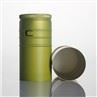

Bottle caps play a crucial role in ensuring product tamper - evidence, which is of utmost importance for both consumers and producers. As a bottle cap supplier, I have witnessed firsthand how these small yet significant components contribute to the safety and integrity of various products.
The Basics of Tamper - Evidence
Tamper - evidence refers to the visible signs that indicate whether a product has been opened or interfered with before reaching the consumer. This is essential for maintaining the quality and safety of products, especially those that are ingested, such as food and beverages, or used for medical purposes. When a consumer sees clear tamper - evidence on a product, they can have confidence in its authenticity and safety.
Types of Bottle Caps and Their Tamper - Evidence Features
Aluminum - Plastic Bottle Caps
One of our popular products is the 33*47mm Aluminum - Plastic Bottle Cap. These caps combine the strength of aluminum with the flexibility of plastic. The aluminum layer provides a rigid outer shell that is difficult to open without leaving obvious signs of tampering. When the cap is first removed, the seal between the aluminum and the bottle is broken, and often, there are small perforations or tear - off strips that are designed to be intact only when the product is in its original, untampered state.
The plastic inner layer, on the other hand, creates a tight seal against the bottle neck. This seal not only helps to preserve the product inside but also makes it evident if someone has tried to pry the cap off or insert a foreign object. If the plastic seal is damaged or displaced, it is a clear indication that the product may have been tampered with.
Wine Bottle Caps
Wine is a product that requires high - level tamper - evidence due to its value and the importance of maintaining its quality. Our 30X60mm Wine Bottle Caps are specifically designed for this purpose. These caps typically feature a tear - off strip around the perimeter. When the consumer purchases a bottle of wine, the strip should be intact. If the strip is broken or missing, it is a strong indication that the bottle may have been opened and potentially tampered with.
The design of these caps also takes into account the aesthetics of the wine bottle. They are often made with high - quality materials that not only provide tamper - evidence but also enhance the overall appearance of the product. The cap is usually tightly fitted to the bottle, and any attempt to remove it without following the proper opening procedure will result in visible damage to the cap or the bottle neck.
Aluminum ROPP Closure
The 30*35mm Aluminum ROPP Closure is another excellent example of a tamper - evident bottle cap. ROPP stands for Roll - On Pilfer - Proof, which means that these caps are designed to be rolled onto the bottle neck during the packaging process, creating a secure and tamper - evident seal.
The aluminum material of the ROPP closure is thin but strong. It has a pre - scored line that runs around the lower part of the cap. When the cap is first opened, the lower part of the cap tears along this line, leaving a visible ring of broken material around the bottle neck. This is a clear and unmistakable sign that the product has been opened for the first time. The design also ensures that the cap cannot be re - attached in a way that would hide the evidence of opening.
How Bottle Caps Provide Assurance to Consumers
Consumers are becoming increasingly concerned about the safety and integrity of the products they purchase. Bottle caps with tamper - evidence features provide them with a sense of security. For example, when a mother buys a bottle of baby formula, she wants to be sure that the product has not been contaminated or tampered with. A tamper - evident bottle cap gives her the confidence that the formula inside is in its original, safe state.
In the case of pharmaceutical products, tamper - evidence is even more critical. A broken or damaged bottle cap on a medicine bottle could indicate that the medication has been exposed to air, moisture, or other contaminants, which could render it ineffective or even harmful. By using tamper - evident bottle caps, pharmaceutical companies can ensure that their products reach the consumers in a safe and reliable condition.
The Importance of Tamper - Evidence for Producers
For producers, tamper - evidence is not only about consumer safety but also about protecting their brand reputation. A single incident of product tampering can have a significant impact on a company's image and sales. By using high - quality, tamper - evident bottle caps, producers can reduce the risk of product tampering and demonstrate their commitment to quality and safety.


In addition, tamper - evidence can also help producers comply with various regulations. Many industries, such as food, beverage, and pharmaceuticals, are subject to strict regulations regarding product safety and tamper - evidence. Using the right bottle caps can ensure that producers meet these regulatory requirements and avoid potential legal issues.
Technological Advancements in Tamper - Evidence Bottle Caps
As technology advances, so do the features of tamper - evident bottle caps. For example, some bottle caps now incorporate RFID (Radio - Frequency Identification) tags. These tags can store information about the product, such as its origin, manufacturing date, and batch number. They can also be used to detect if the cap has been opened or removed. When a consumer scans the RFID tag with a compatible device, they can get detailed information about the product's history and verify its authenticity.
Another technological advancement is the use of smart seals. These seals can change color or emit a signal when they are exposed to certain conditions, such as heat or moisture, which could indicate tampering. This provides an additional layer of security and makes it even more difficult for tamperers to go undetected.
Conclusion
In conclusion, bottle caps are essential components in providing product tamper - evidence. As a bottle cap supplier, we are committed to providing high - quality, innovative bottle caps that meet the diverse needs of our customers. Our 33*47mm Aluminum - Plastic Bottle Cap, 30X60mm Wine Bottle Caps, and 30*35mm Aluminum ROPP Closure are just a few examples of our products that offer excellent tamper - evidence features.
If you are a producer looking for reliable bottle caps with tamper - evidence capabilities, we invite you to contact us for a procurement discussion. We can provide you with detailed information about our products, customization options, and pricing. Let us work together to ensure the safety and integrity of your products.
References
- Packaging Machinery Manufacturers Institute (PMMI). (2023). The Importance of Tamper - Evidence in Packaging.
- International Bottled Water Association (IBWA). (2023). Best Practices for Tamper - Evidence in Bottled Water Packaging.
- Food and Drug Administration (FDA). (2023). Regulations on Tamper - Evidence for Food and Pharmaceutical Products.